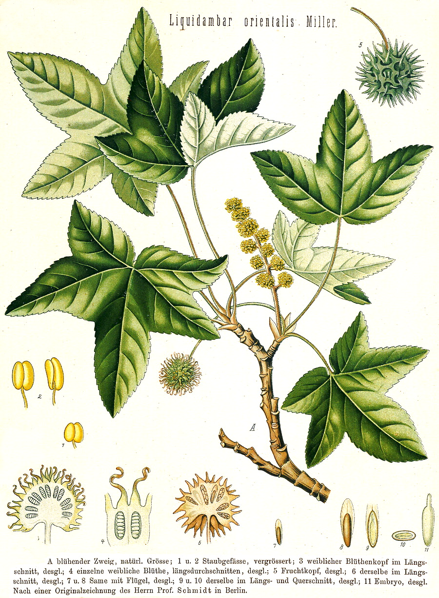

Altingiaceae
Sweetgum Family
Altingiaceae is a small family of flowering plants in the order Saxifragales, commonly known as the Sweetgum family. It comprises a single genus, Liquidambar, containing about 15 species of deciduous or semi-evergreen trees. They are recognizable by their alternate, palmately lobed leaves (resembling maples but alternate), aromatic resin, unisexual flowers aggregated into dense spherical heads, and distinctive spiky, ball-like fruits.
Overview
The Altingiaceae family, now generally understood to contain only the genus Liquidambar, consists of about 15 species of trees. Historically, the genera Altingia and Semiliquidambar were sometimes recognized, but molecular data strongly suggests they are nested within Liquidambar. The family exhibits a markedly disjunct distribution pattern, with species native to eastern North America, Central America, eastern and western Asia.
Sweetgum trees (Liquidambar) are typically large deciduous or semi-evergreen trees inhabiting temperate and subtropical forests, often in moist, riparian, or bottomland sites. They are known for producing aromatic resins (storax or styrax), having attractive star-shaped (palmately lobed) leaves that often display vibrant fall colors, and developing characteristic woody, spiky, ball-like fruits that persist on the tree. Some species, like American Sweetgum (L. styraciflua), often develop corky wings or ridges on their twigs.
Economically, Liquidambar styraciflua is an important timber tree in North America, valued for its wood (often called satin walnut or redgum). Several species are widely planted as ornamental shade trees due to their symmetrical form and brilliant autumn foliage. The aromatic balsam or storax obtained from L. orientalis and other species has been used historically in perfumes, incense, and traditional medicine.
Quick Facts
- Scientific Name: Altingiaceae
- Common Name: Sweetgum family
- Number of Genera: 1 (Liquidambar)
- Number of Species: Approximately 15
- Distribution: Disjunct: E North America, Central America, E Asia, W Asia
- Evolutionary Group: Eudicots - Core Eudicots - Saxifragales
- Current Date: March 29, 2025
Key Characteristics
Growth Form and Habit
Deciduous or semi-evergreen trees, often large, producing aromatic resins (storax). Twigs sometimes have corky wings or ridges.
Leaves
Leaves are alternate, simple, but deeply palmately lobed (typically 3-7 lobes), resembling maple leaves (which are opposite). Margins are usually finely serrated. Leaves are long-petiolate. Stipules are present but small and fall early (caducous). Often exhibit strong fall coloration.
Inflorescence
Plants are monoecious (separate male and female flowers on the same tree). Flowers are small, lacking petals, and aggregated into dense, spherical heads (capitula). Male (staminate) heads are numerous, arranged in terminal racemes or panicles. Female (pistillate) heads are solitary and hang below the male inflorescence on long stalks.
Flowers
Flowers are unisexual, apetalous (no petals), and highly reduced.
- Staminate (Male) Flowers: Densely packed in heads, consisting essentially of numerous stamens (typically 4-10 per reduced flower structure), intermixed with minute bracts. Sepals are absent.
- Pistillate (Female) Flowers: Densely packed in a globose head. Each flower has a semi-inferior or inferior ovary composed of 2 fused carpels, usually surrounded by minute scales or staminodes. Styles are 2, persistent, recurved, and papillose along the inner surface for pollen reception. Ovules are numerous in each locule, but usually only 1 or 2 develop into seeds.
Fruits and Seeds
The fruit is a distinctive multiple fruit (a syncarp) – a hard, woody, spherical, spiky ball. It is formed from the aggregation of the maturing ovaries (which develop into 2-valved capsules) from the female flower head. The persistent, hardened styles form the characteristic spikes on the fruit's surface. Each capsule within the syncarp typically releases 1 or 2 winged seeds, along with numerous smaller, aborted ovules or sterile seeds.
Seeds are winged, facilitating wind dispersal. They contain fleshy endosperm and a straight embryo.
Chemical Characteristics
The family is known for producing aromatic balsams or resins (storax/styrax) rich in compounds like cinnamic acid and styrenes. Tannins are also present. They do not produce glucosinolates (unlike Brassicales).
Field Identification
Identifying Altingiaceae (Liquidambar species) relies on a combination of their tree habit, distinctive leaves, unique inflorescences, and characteristic fruits:
Primary Identification Features
- Habit: Medium to large trees.
- Alternate, Palmately Lobed Leaves: Star-shaped leaves resembling maples, but arranged alternately on the stem (key difference from maples which are opposite).
- Globose Flower Heads: Flowers aggregated into dense spherical heads; male heads in racemes above solitary female heads on long stalks.
- Spiky Ball Fruit: The most distinctive feature is the persistent, hard, woody, spiky, spherical multiple fruit (syncarp).
- Aromatic Resin: Wounded bark or crushed leaves may release a fragrant resin.
Secondary Identification Features
- Corky Wings on Twigs: Often present, especially on L. styraciflua.
- Serrated Leaf Margins: Edges of the leaf lobes are typically finely toothed.
- Brilliant Fall Color: Many species display vibrant red, purple, yellow, and orange colors in autumn.
- Monoecious Condition: Finding both male and female inflorescences on the same tree.
Seasonal Identification Tips
- Growing Season: Identify by the alternate, palmately lobed leaves and tree habit. Check twigs for corky wings.
- Flowering Season: Spring, concurrent with or just after leaf emergence. Look for the distinct male racemes and solitary female heads. Flowers themselves are inconspicuous.
- Fruiting Season: Fruits develop through summer and mature in fall, often persisting on the tree through winter. The spiky balls are highly diagnostic year-round, even after seeds have dispersed. Fall foliage color is prominent.
Common Confusion Points
- Aceraceae / Sapindaceae (Maple family): Maples (Acer) have very similar palmately lobed leaves, but their leaves are always opposite, and their fruit is a characteristic winged schizocarp (samara), not a spiky ball.
- Platanaceae (Sycamore/Plane Tree family): Sycamores (Platanus) also have alternate, palmately lobed leaves and spherical fruit heads. However, their leaves usually have coarser teeth or lobes, distinctive stipules encircling the twig, characteristic mottled/exfoliating bark, and the fruit heads are aggregates of achenes (not woody capsules) and less spiky.
- Hamamelidaceae (Witch Hazel family): Some witch hazels have star-shaped flowers, but leaves are simple, unlobed (though sometimes wavy-margined), and the fruit is a woody capsule splitting from the top, not a spiky ball. Liquidambar was formerly placed in this family.
The combination of alternate, palmately lobed leaves and the spiky, ball-like fruit is definitive for Liquidambar (Altingiaceae).
Field Guide Quick Reference
Look For:
- Tree habit
- Alternate, palmately lobed leaves (maple-like)
- Serrated leaf margins
- Flowers in dense, spherical heads
- Monoecious (M/F heads separate)
- Fruit: Hard, woody, spiky ball (syncarp)
- Aromatic resin
- Corky wings on twigs (often)
Key Variations (within Liquidambar):
- Number of leaf lobes (3-7)
- Presence/prominence of corky wings
- Degree of deciduousness (deciduous to semi-evergreen)
- Slight differences in fruit size/spine length
Notable Examples
The family consists of a single genus, Liquidambar, with several well-known species:

Liquidambar styraciflua
American Sweetgum
A large deciduous tree native to the southeastern United States, Mexico, and Central America. Widely planted as an ornamental and shade tree, famous for its star-shaped leaves (usually 5-7 lobes) that turn brilliant shades of yellow, orange, red, and purple in autumn. Twigs often develop distinctive corky wings. Important timber species.

Liquidambar orientalis
Oriental Sweetgum / Turkish Sweetgum
A smaller deciduous tree native to a restricted area in southwestern Turkey and the island of Rhodes. It typically has 5-lobed leaves that are smaller than those of L. styraciflua. This species is the primary source of storax (or styrax), an aromatic balsam used in perfumes, incense, and traditional medicines.

Liquidambar formosana
Formosan Sweetgum / Chinese Sweetgum
A deciduous tree native to East Asia (China, Taiwan, Korea, Laos, Vietnam). Its leaves are typically 3-lobed (sometimes 5), distinguishing it from L. styraciflua. It also exhibits good fall color and is cultivated as an ornamental tree. Valued in traditional Chinese medicine.

Liquidambar sp. (Fruit)
Sweetgum Fruit
The highly distinctive fruit common to all Liquidambar species. This woody, spiky ball is a syncarp, formed from the fused capsules of the female flower head. The 'spikes' are persistent styles. These fruits often remain on the tree long after leaf fall and litter the ground beneath.
Phylogeny and Classification
Altingiaceae belongs to the core eudicot order Saxifragales. This order represents an early-diverging lineage among core eudicots and includes a diverse array of plants, such as Crassulaceae (stonecrops), Saxifragaceae (saxifrages), Grossulariaceae (gooseberries), Paeoniaceae (peonies), and Hamamelidaceae (witch hazels). Liquidambar was historically often included within Hamamelidaceae.
Molecular phylogenetic studies have clarified the relationships within Saxifragales, confirming that Altingiaceae is a distinct family. It is placed in a well-supported clade that is sister to the clade containing Hamamelidaceae, Cercidiphyllaceae (Katsura tree), and Daphniphyllaceae. This placement highlights its close affinity to the witch hazel family but justifies its recognition as a separate lineage based on both molecular data and distinct morphological features (like the syncarp fruit).
Position in Plant Phylogeny
- Kingdom: Plantae
- Clade: Angiosperms (Flowering plants)
- Clade: Eudicots
- Clade: Core Eudicots
- Order: Saxifragales
- Family: Altingiaceae
Evolutionary Significance
Altingiaceae, represented by Liquidambar, is significant for several reasons:
- Ancient Lineage: Fossil evidence indicates that Liquidambar is an ancient genus, dating back to the Cretaceous period, making it a "living fossil" in some respects.
- Disjunct Distribution: Its current distribution across widely separated regions of the Northern Hemisphere is a classic example of a pattern likely resulting from past climate change (e.g., Tertiary cooling) fragmenting a once more continuous range.
- Phylogenetic Link: Helps bridge understanding between families like Hamamelidaceae and Cercidiphyllaceae within the Saxifragales order.
- Convergent Evolution: The palmately lobed leaves show striking convergence with maples (Acer), highlighting how similar forms can evolve independently in different lineages.
- Unique Fruit Structure: The complex syncarp derived from a head of pistillate flowers is a distinctive reproductive adaptation within the Saxifragales.